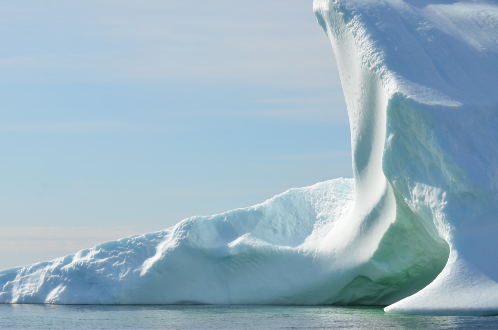

Currently Reading
- The Body Keeps the Score — Bessel van der Kolk
- Wintering — Katherine May
I return to stories and landscapes that invite spaciousness. These images reflect the same themes I look for in books and essays: perspective, stillness, and wonder.

